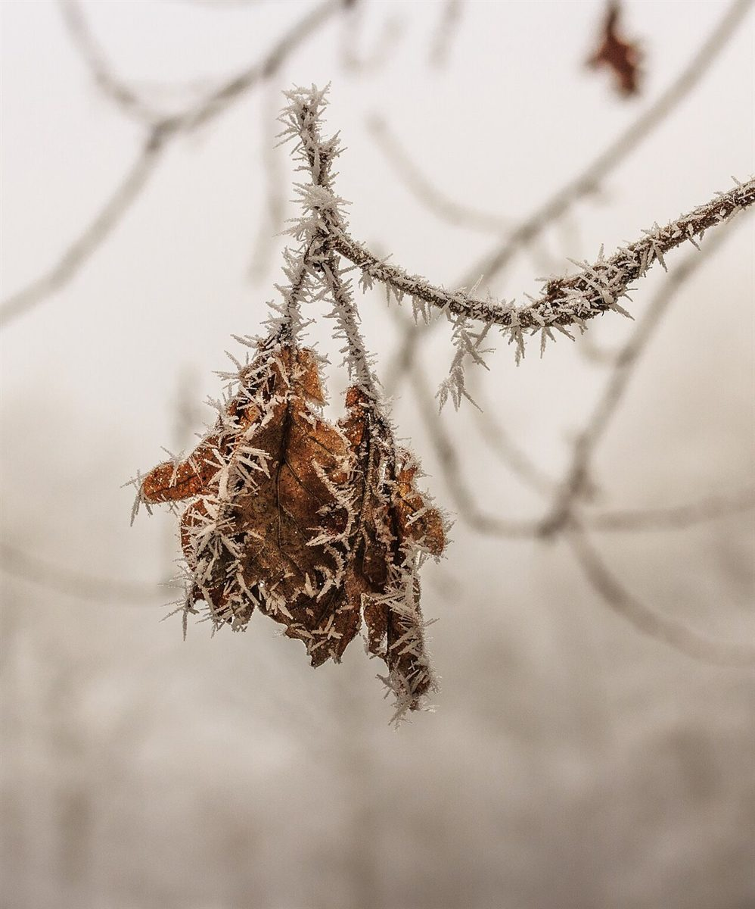
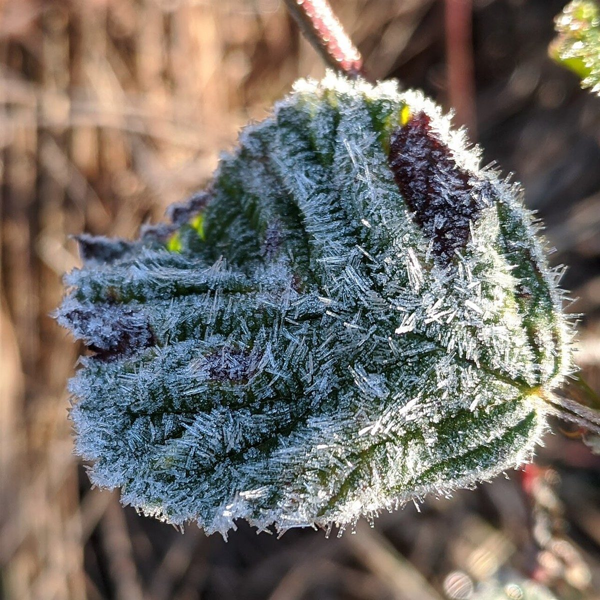

台所micchi

制作側の連想
雪囲いの縦板、一枚ずつ。
店名の由来は分かりません。制作側は、冬の前に家のまわりへ縦板を一枚ずつ立てていく「雪囲い」を連想しました。そこでこのサイトは、縦書きの見出しと縦に並ぶ板のレイアウトで作っています。お店の理念・由来とは無関係な、制作側の連想です。
雪囲い五枚
冬支度の板を、順に立てる。
写真は妙高市の風景ではありません。冬のイメージで選んだ、国外・撮影地不明のフリー素材です。
- 一枚目

国外のイメージ(オランダ) - 二枚目

国外のイメージ(ドイツ) - 三枚目

国外のイメージ(米国) - 四枚目

国外のイメージ(スウェーデン) - 五枚目

国外のイメージ(ロシア)
ご案内
確認できていること
| 所在地 | 〒949-2113 新潟県妙高市杉野沢2054-2 |
|---|---|
| 電話 | なし |
| 営業時間 | 準備中 |
| 定休日 | 準備中 |
| ご予約 | 準備中 |
| 駐車場 | 準備中 |
| SNS | Instagram @daido56micchi |